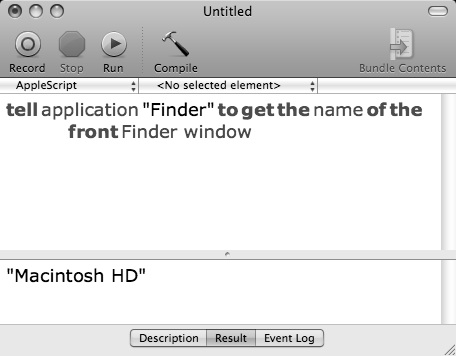
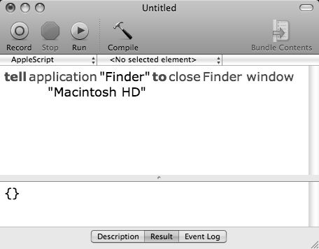

The Name Property
The first property of a Finder window we’ll examine is its name property.
A window’s name is the window title displayed in the title bar of the window. In the case of Finder windows, the value of the name property is the name of the folder or disk whose contents are displayed within the Finder window.
To retrieve the value of the name property of a window, we’ll use the command “get.” This verb is used when we want to extract information or data from a scriptable element or object.
Delete the previous script from the open script window, then enter, compile, and run the following script:
 A script to retrieve the title of the frontmost Finder window.
A script to retrieve the title of the frontmost Finder window.
tell application "Finder" to get the name of front Finder window
To see the result of our request, look in the Result Pane at the bottom the script window. To activate the Result Pane, click the tab titled Result at the bottom of the script window. In the Result pane you’ll see the result, if any, of the last script action. In the previous example, the result is the title of the open Finder window, which also happens to be the name of your startup disk.
{kind=link}

A script window displays the result of the last script action in the Results pane at the bottom of the window.
For Finder windows, the name property is a read-only property. It can be used to refer to a Finder window, however, its value cannot be changed by a script. The value of the name property of a Finder window will always be the name of the folder or disk whose contents it displays.
Delete the previous script from the script window, then enter, compile, and run the following script. Be sure to replace “Macintosh HD” with the name of the open Finder window if it is different on your computer.
 A script that closes a specific Finder window.
A script that closes a specific Finder window.
tell application "Finder" to close Finder window "Macintosh HD"
As the previous script demonstrates, you can use the name property as a means to refer to a specific Finder window. When the script is run, the Finder window named “Macintosh HD” is closed.
The previous script worked because it is a fully qualified tell statement, in that it both refers to the object receiving the commands, in this case the open window, and indicates the desired action to be performed, closing the window. All tell statements are constructed in this manner.
{kind=link}

A script consisting of a single tell statement targeting a Finder window.
Also note that the result of the script action is a set of curly brace characters. This is an AppleScript list. We’ll talk more about that in a couple pages.